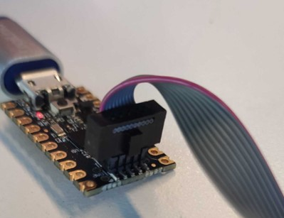
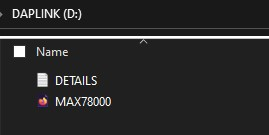

The AD-ACEVSECRDSET-SL is an electric vehicle (EV)
type 2 charging system based on ADI’s microcontroller and energy metering technology.
This solution is designed for a Type 2 EVSE 3.6kW EV charging cable, enabling
easy integration with standard EV systems.
The AD-ACEVSECRDSET-SL is designed to meet
IEC61851 and IEC62752 standards and includes a Type A residual current device
(RCD) and a control pilot circuit.
The no-OS Framework and the Drivers for the Main Components
no-OS General Description
ADI no-OS repository is a software framework by Analog Devices Inc
for systems that don’t include an operating system (OS), otherwise known as baremetal.
This framework defines a common interface (API)
for accessing typical baremetal peripherals such as GPIO, SPI, I2C, RTC, Timer,
Interrupt Controller, and other. This common API may be then used to initialize
and control these peripherals in a common way across multiple microcontroller platforms.
The framework currently supports Intel and Xilinx microprocessors and SoC’s as well as
Analog Devices’ own precision microcontrollers, several Maxim MAX32xxx microcontrollers,
STMicroelectronics’ STM32, Raspberry Pi’s Pico, and mbed-OS-based devices. By using this
common driver API, following its own
coding style,
the ADI no-OS repository is able to provide reference projects for
Analog Devices evaluation boards running on various underlying hardware.
Thanks to the No-OS Build Guide,
no-OS users may generate standalone reference projects in a short period of time and
use them as the starting point for their own development. no-OS is an open-source
software, and its official repository is the
no-OS GitHub Repository.
Users are free to use and distribute no-OS, provided that they comply with the
license.
The no-OS main drivers used in the firmware are the ones concerned with the
MAX32655 microcontroller, the ADE7913 isolated, 3-channel Σ-Δ ADC,
and the ADT75 temperature monitoring system.
no-OS Support for Maxim Microcontrollers
The no-OS framework supports several Maxim microcontrollers, including the
MAX32655, and implements the low-level functions for controlling the
hardware components of the device: GPIO, UART, NVIC, I2C, and SPI.
The No-OS Build Guide
provides the steps required for creating and building an application based
on a supported Maxim microcontroller part.
ADE7913 no-OS driver
The existing no-OS driver for the ADE7913 ADC implements the
functionalities provided by the device through a comprehensive high-level API.
All the settings of the ADE7913 ADC are accessed through separate
functions that perform SPI read and write operations on the corresponding
device registers. The driver provides the possibility of reading
the acquired data at moments in time specified by the application or depending
on the state of the Data Ready pin through an interrupt. Using the device
requires populating the initialization parameters structure, calling the
ade7913_init API and then reading the i_wav, v1_wav, and v2_wav members of the
device structure. Depending on the desired settings, these members are updated
through an interrupt triggered by the Data Ready pin or each time a long SPI
read operation is performed on one of the device’s registers.
// ADE7913 initialization structurestructade7913_init_paramade7913_ip={0};// ADE7913 dev SPI init paramsade7913_ip.spi_init=&ade7913_spi_ip;// ADE7913 dev DATA_RDY init paramsade7913_ip.gpio_rdy=&ade7913_gpio_rdy_ip;// ADE7913 dev RESET init paramsade7913_ip.gpio_reset=&ade7913_gpio_reset_ip;// IRQ deviuce descriptor used to handle interrupt routine for GPIO RDYade7913_ip.irq_ctrl=ade7913_irq_desc;// ADE7913 device initializationret=ade7913_init(device,ade7913_ip);// Data updated automatically in the i_wav, v1_wav, and v2_wav members of the device structure
ADT75 no-OS driver
no-OS support for the ADT75 provides an easy and straight-forward way
of obtaining temperature readings from the device. Using the device implies
the specification of the SPI communication parameters, the call of the
adt75_init function for initialization, and the adt75_get_single_temp
API for getting the current temperature value.
//ADT75 initialization structurestructadt75_init_paramadt75_ip={.comm_param=i2c_param,};// ADT75 device initializationret=adt75_init(&adt75_desc,&adt75_ip);// ADT75 single temperature readingret=adt75_get_single_temp(adt75_desc,&val);
It is recommended to update the firmware to the latest firmware release.
Flashing and Debugging the Firmware for the AD-ACEVSECRDSET-SL using the MAX32625PICO
Requirements
MAX32625PICO Board
AD-ACEVSECRDSET-SL board
AD-ACEVSECRDSET-SL.hex file
USB-to-micro USB cable
10-pin Cortex Debug Cable
3-wire cable with mains plug attached
Serial terminal
The binary can be obtained following the steps presented at the
No-OS Build Guide
STEP 1 — MAX32625PICO firmware update
Download the MAX32655FTHR Firmware image from
here.
Follow the procedure indicated
here
to load the new firmware.
STEP 2 — Connecting MAX32625PICO to AD-ACEVSECRDSET-SL
Connect the Cortex Debug Cable to the MAX32625PICO with the
connector key directed towards the outside of the board and to the
AD-ACEVSECRDSET-SL board directed downwards.

STEP 3 — Connecting AD-ACEVSECRDSET-SL to Mains
Connect the NULL, PHASE, and Earth as indicated on the enclosure.
Power up the board from 230V AC through the attached cable.
STEP 4 — Flashing the Firmware to the board
Connect the MAX32625PICO if it is not connected to the PC USB port.
The DAPLINK Drive should appear as a storage device on the PC.
Open the DAPLINK Drive. Two files should already be present as seen in the following
image.

Drag and drop the AD-ACEVSECRDSET-SL.hex into DAPLINK drive.
The firmware will be written on the target MCU.
STEP 5 — Verify that the firmware is written correctly
Open Device Manager and go to Ports. Find the COM port allocated to the
MAX32625PICO.
Use a serial terminal (e.g., PuTTY) to verify that the firmware was correctly
updated. If using PuTTY, under the Terminal menu, select “Implicit CR in every LF”.
From the Window menu, increase the Lines of scrollback value to a higher number
(e.g., 200000) than the default.
Open PuTTY and, under the Session menu, enter the following data: the COM port
indicated in Device Manager for the device and a baud rate of 57600.
Click the Open button. After the terminal window opens, reset the
AD-ACEVSECRDSET-SL board using the reset button.
The following messages should be displayed in the serial terminal window:
{kind=link}
{kind=link}